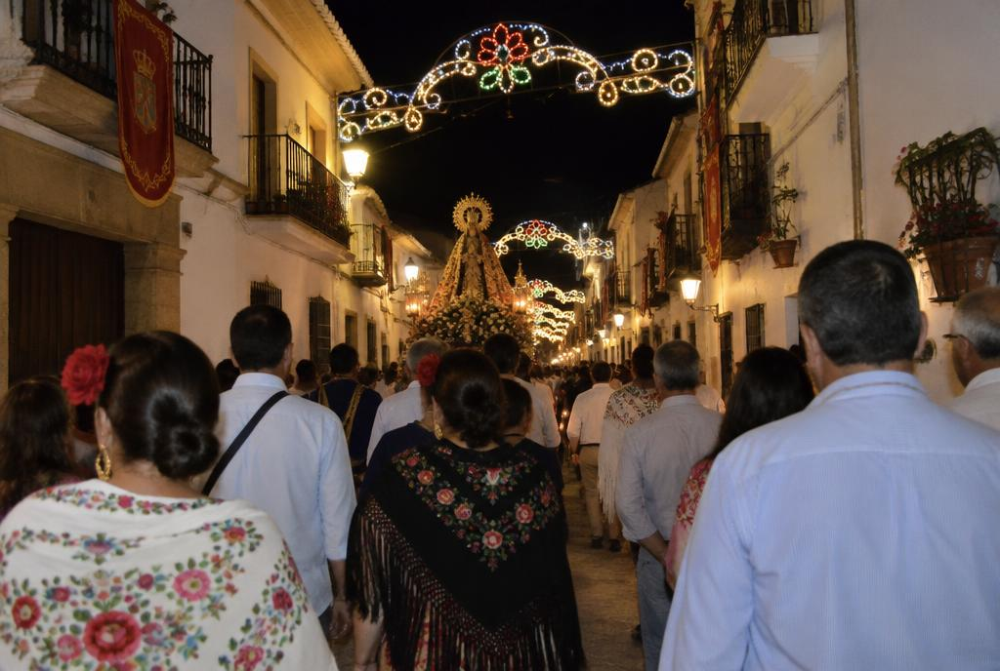

Tradición
Fiestas y tradiciones
El calendario que une a todo el pueblo.
Calendario festivo
| Fiesta | Fecha | Qué se hace |
|---|---|---|
| San Antón | 17 de enero | Hogueras y bendición de animales |
| Semana Santa | Marzo / abril | Procesiones por el casco antiguo |
| Feria y fiestas patronales | [Comprobar fecha] | Verbena, música y atracciones |
Comprueba todas las fechas en la web del Ayuntamiento antes de publicar.
Mi opinión
[Escribe aquí tu opinión personal, sin IA, de al menos 4 líneas.]